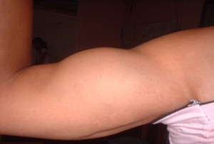

bakelew 
/bakɔlɔw/
1.
n.
a charm that usually attach in someone's upper arms
Cult. This charm is used by the Matigsalug tribe in war for the bullet to escape from them.
Eng. charm (a charm attach in someone's upper arms)
Online dict status: -
Usage level: M
2.
n.
(bakelawan, -en) upper arm
Ka bakelawan sabeka ne baad te belad ne dapit te igtubu. Egdakel seini ke egpangeseg ka etew.
Derakel ka me bakelawan ni Tata su layun sikandin egpangenat te mabbehat.
Tata's upper arms are large because he always lift up a heavy things.
Eng. upper arm; arm; forearm
Tag. bráso
Ceb. brásu
Ilo.: tákiag; bráso
OCM: Ethnoanatomy (826)
DDP: Arm (2.1.3.1)
Online dict status: -
Usage level: B
v.
for someone (egbebakelew, migbebakelew/imbebakelew, agent, eg><ø-rdpCV-) to put something on their upper arm (e.g., charm)
Eng. put, to (something)
Online dict status: -
Usage level: M
n.
(mamakelew, maN-) a measure from the fingertips to the upper arm
Mamakelew e ka kasili ne neutel ney.
Our caught eel is as big as upper arm.
Eng. measure
Online dict status: -
Usage level: R
Updated by: RJH,AAA,RUL,QDL
Last updated: 10/Feb/2010
This page last updated: 19/May/2012
Copyright © 2009-2010, Matigsalug Language Christian Association, Inc